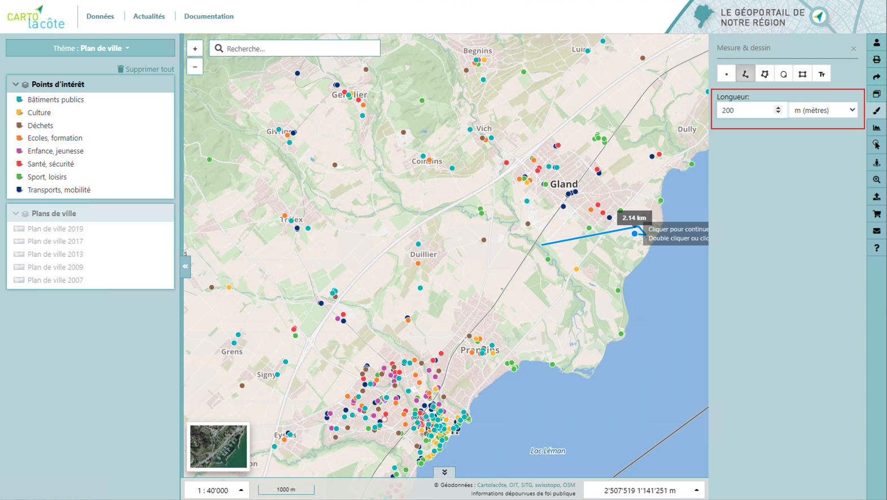
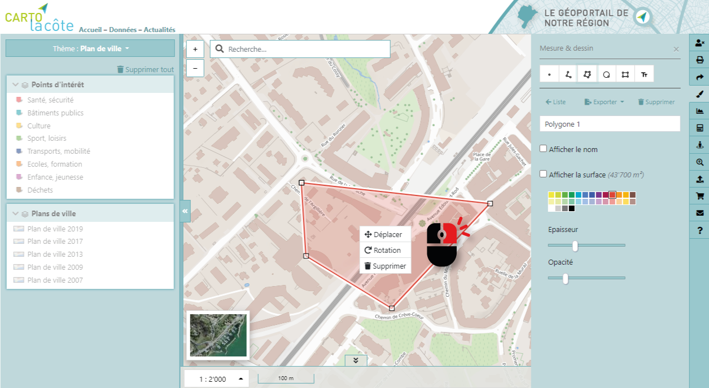
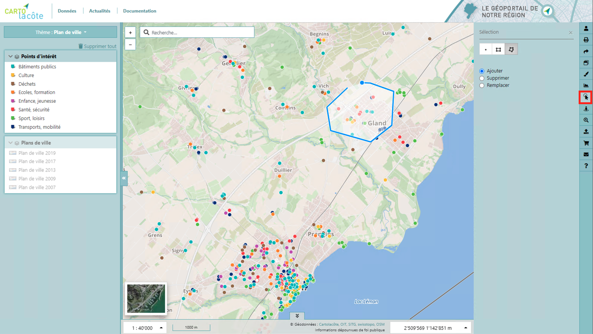

Outils¶
Les outils sont regroupés sur la barre verticale à droite de l’interface.
Intégrer la carte¶
Le géoportail Cartolacôte peut être intégré dans n’importe quelle page internet sous forme d’iframe.
Mesure & Dessin¶
Des outils de mesure et de dessin permettent d’effectuer des annotations et mesures sur la carte.
Icône |
Action |
Icône |
Action |
|---|---|---|---|
Dessiner un point |
Dessiner un cercle |
||
Dessiner une ligne |
Dessiner un rectangle |
||
Dessiner un polygone |
Ecrire un texte |
Un double clic permet de terminer la saisie d’une ligne ou d’un polygone. Certaines propriétés des objets dessinés peuvent être définies, telles que la couleur, l’épaisseur ou l’opacité.
Il est possible d’ajouter une mesure prédéfinie pour chaque segment du dessin. Pour cela il suffit de renseigner le champ ci-dessous :
{kind=link}
L’affichage d’une information géométrique (coordonnées, longueur, surface, azimut) complète les annotations et fait office d’outil de mesure.
Le clic droit sur un objet dessiné permet de le déplacer, le tourner ou le supprimer alors qu’un clic droit sur un sommet permet de le supprimer.
{kind=link}
Il est également possible de nommer les annotations et de les exporter aux formats KML et/ou GPX.
Pour les lignes il est également possible d’ajouter une flèche selon un direction (avant, derrière, double) sur :
le premier segment
le dernier segment
chaque segment
{kind=link}
Lorsque vous dessinez un objet vous avez la possiblité d’accrocher votre dessin à une autre géométrie. Le point s’accorche automatiquement à une géométrie précédement lorsqu’il est à une certaine distance de celle-ci.
Profil altimétrique¶
Il est possible de tracer un profil en long en se basant sur les modèles numériques de terrain et de surface (MNT et MNS).
Après avoir activé l’outil de profil, il faut dessiner sur la carte le profil désiré et terminer avec un double clic. Le profil, qui est interactif avec la carte, s’affiche ensuite à l’écran, avec en brun le terrain et en vert les éléments de surface (bâtiments, végétation, etc.).
Sélection¶
Il est possible de sélectionner les objets sur la carte de différentes manières :
Point : un seul objet est sélectionné
Rectangle : les objets contenus dans le rectangle sont sélectionnés
Polygone : les objets contenus dans le polygone sont sélectionnés
Lorsque « Remplacer » est coché, la sélection précédente est remplacée par la nouvelle et lorsque « Supprimer » est coché, les objets sont supprimés de la sélection.
{kind=link}
Street View¶
Pour activer l’affichage Street View, une fois l’outil sélectionné, il faut cliquer sur la carte pour charger la vue 3D. La carte est synchronisée avec la vue 3D et vice-versa.
Données externes¶
Il est possible d’ajouter différentes données externes à la carte :
Géoservices (WMS ou WMTS)
Fichier local (KML ou GPX) (en cliquant sur le bouton correspondant à l’outil ou en faisant un glisser-déposer sur la carte)
Certains serveurs WMS (confédération, canton) sont préconfigurés mais il est tout à fait possible de se connecter à d’autres serveurs WMS, en entrant leur adresse dans le formulaire. Lorsqu’un WMS ou WMTS est chargé sur la carte la légende s’affiche et les objets de la couche sont interrogeables.
Statistiques¶
Un outil de statistiques, accessible uniquement en étant connecté, permet de calculer des statistiques sur la population, les emplois, les logements et l’énergie sur un secteur spécifique.
Pour effectuer un calcul, après avoir activé l’outil, il faut dessiner sur la carte un périmètre et terminer la saisie par un double clic. Les différentes valeurs vont ensuite être calculées et affichées, pour autant que la surface ne soit pas trop petite ni trop grande.
{kind=link}